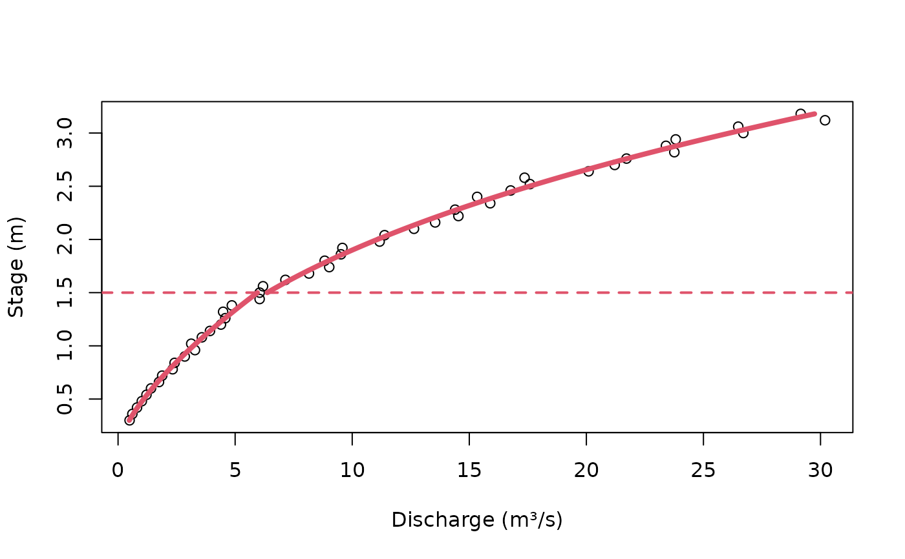
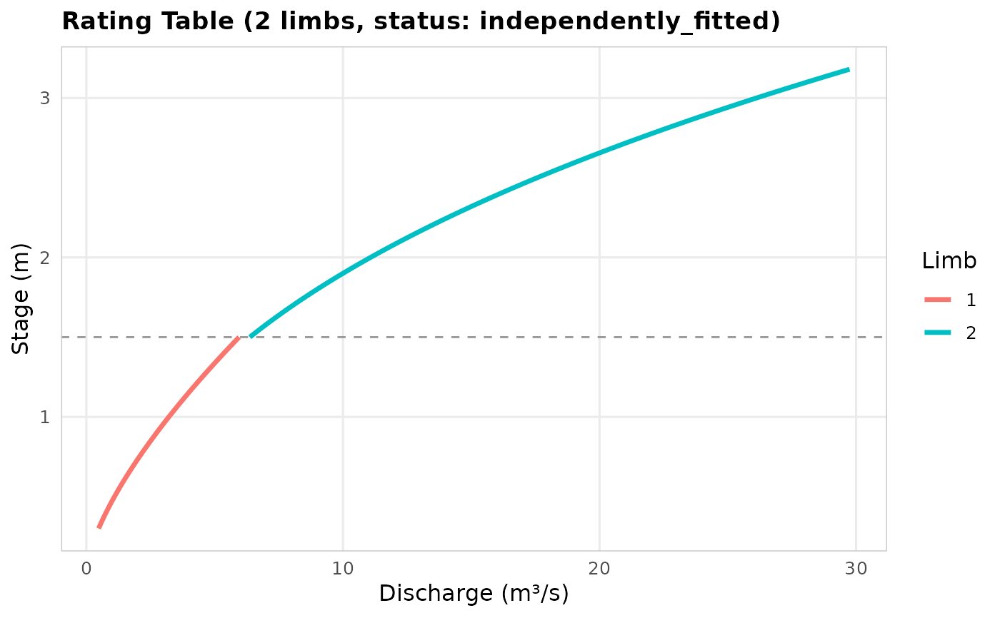
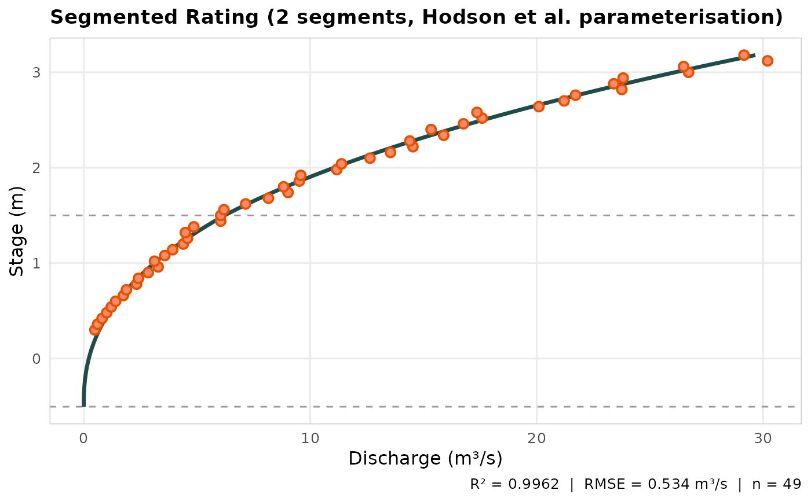

Draws a rating with discharge on the horizontal axis and stage on the
vertical. Dispatches on the class of fit, so the same call works
whichever model produced the rating:
FlodeRating: the gauged points with each limb's fitted curve drawn over them, one colour per limb, in base graphics.
FlodeSegmentedRating: the gauged points and the single joint curve, with dashed horizontal lines where each segment's factor turns on (
bp1tobpk), as a ggplot2 figure.FlodeRatingTable: each limb's curve in its own colour, so a kink or overlap at a junction can be seen, as a ggplot2 figure. A table holds no gaugings, so there are no points.
Arguments
- fit
- ...
Options for the class-specific method:
colours(FlodeRating only): plotting colours, one per limb, orNULL(default) for a single colour. A vector of the wrong length is ignored with a warning.n_points: how many points are used to draw each limb's curve (the whole curve, for a segmented rating). Defaults to200L, or300Lfor a FlodeSegmentedRating.
Value
NULL, invisibly, for a FlodeRating, which draws in base
graphics. For a FlodeSegmentedRating or a FlodeRatingTable, the
ggplot2 figure, invisibly, as well as drawing it.
See also
plot_rating_residuals() for how well each limb fits,
plot_rating_curves() to overlay several ratings, and
plot_rc_gaps() for a before and after view of a closed junction.
Examples
set.seed(42)
stage_m <- seq(0.3, 3.2, by = 0.06)
discharge_cms <- ifelse(stage_m < 1.5, 3.2 * stage_m^1.6,
3.2 * 1.5^1.6 * (stage_m / 1.5)^2.1) *
exp(rnorm(length(stage_m), sd = 0.04))
# Two independent limbs: points, with each limb's curve over them
fit <- rate_optimise(discharge_cms, stage_m, control = 1.5)
rating_plot(fit)

# The same rating as an equation table: just the curves, one colour per limb
rating_plot(as_rating_table(fit))

# A joint segmented fit
fit_seg <- rate_optimise_segmented(discharge_cms, stage_m, control = 1.5)
rating_plot(fit_seg)
